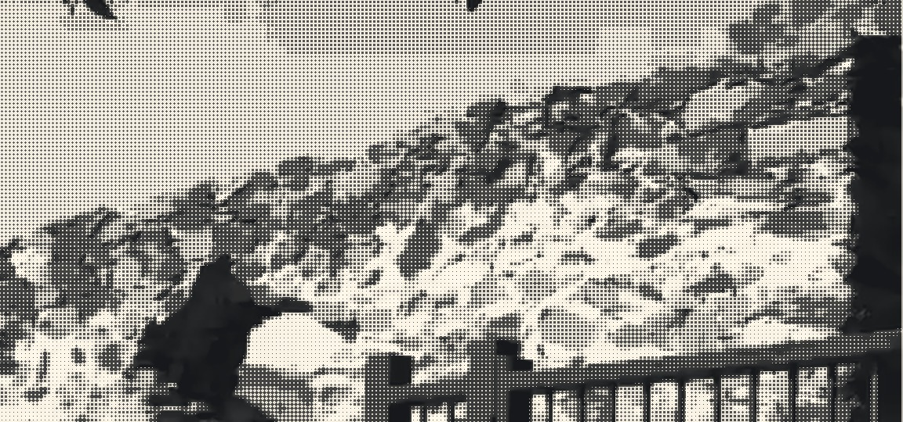

LAUT MERAH
HUDAIBIYAH
MAKKAH
BAIATUR RIDWAN
di bawah sepohon pokok

Hudaibiyah · hari ini
?
Allahu a'lam
ZAMAN KHALIFAH KE-2
Saidina Umar al-Khattab
MASIH ADA ✓
KESYIRIKAN
PEMUJAAN ✕
Bila Saidina Umar tahu…
TEGAS
Hudaibiyah · hari ini
Kenapa Saidina Umar
TEBANG
pokok ni?
BERSAMBUNG · PART 2 →
Kenapa Nabi SAW
TAK
hantar Saidina Umar ke Makkah?